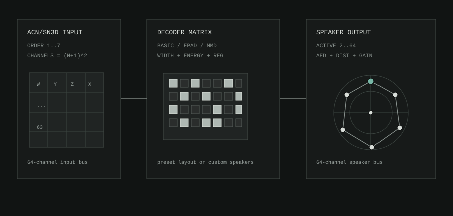

Ambi Speaker Decoder
s3g Ambi Speaker Decoder 64 decodes ambisonic ACN/SN3D input to a 64-channel speaker output bus. It is built for REAPER sessions where the speaker layout is part of the composition, installation, or 3OAFX chain.
The decoder supports first through seventh order. The output bus stays 64 channels so routing is predictable; the active speaker count decides which output lanes are used.
Signal Flow

The decoder reads ambisonic channels from the input bus, builds a speaker matrix from the selected order and layout, and writes one output lane per active speaker. Unused speaker lanes are silent.
Layouts
The layout menu provides common speaker shapes plus custom editing.
For room-style presets, speaker numbering starts at the stereo-right position and moves clockwise around each elevation layer, then continues upward. DOME24 and DOME25 follow the s3g-mc dome panner structure: 12 lower speakers, 8 middle speakers, 4 upper speakers, and a top point for DOME25. SPHERE24 keeps the fixed 3OAFX virtual-speaker order because that order is part of the insert workflow.
| Layout | Use |
|---|---|
QUAD |
Four speakers at zero elevation. |
CUBE8 |
Eight corner speakers around a cube. |
CUBE17 |
The 17-point cube layout used by the s3g-mc cube panner. |
DOME24 |
Twenty-four speaker hemisphere dome: 12 lower, 8 middle, 4 upper. |
DOME25 |
Dome24 plus a top speaker, matching the s3g-mc 25-channel dome panner shape. |
QUAD+OH |
Quad plus two overhead speakers at -90 and +90 azimuth. |
SPHERE24 |
The 24-channel virtual sphere used by the 3OAFX workflow. |
CUSTOM |
Generate a full-sphere or hemisphere speaker field, then edit speakers directly. |
Controls
ORDERselects the ambisonic order from1OAto7OA.MODEchooses the decoder matrix style:BASIC,EPAD, orMMD.COUNTsets how many output lanes are used, from 2 to 64. InCUSTOM, this also generates a new speaker field.FIELDchooses howCUSTOMlayouts are generated:SPHEREdistributes speakers over a full sphere, andHEMIkeeps them in the upper hemisphere.WGTchooses ambisonic order weighting:NONE,MAXRE, orINPHASE.WIDTHis the broad decoder matrix trim.MIXERswitches the large left view to per-speakerGAINtrims, mute/solo buttons, and the finalOUTgain. Speaker gains are shown 16 at a time, with more pages as needed.MAPswitches the large left view to a decoder map. It uses the current selected-speakerAZ/ELdirection as a probe and shows which speakers receive energy from the current order, weighting, mode, gains, and layout.
Changing COUNT or FIELD creates a new CUSTOM layout automatically. SELECTED SPEAKER, AZIMUTH, ELEVATION, and DISTANCE edit one speaker at a time. AZIMUTH, ELEVATION, and DISTANCE have sliders for quick movement and text boxes for exact entry. Any position edit keeps the layout in CUSTOM.
Field View
The speaker field follows the same camera convention as the Ambi Point Encoder. TOP draws 0 degrees at the top, 180 at the bottom, -90 to the right, and +90 to the left. SIDE draws positive elevation upward. 3/4 is for inspecting layers and custom layouts.
Use - / + to zoom the camera view. Drag blank space in the field to rotate the view. Camera movement changes only the visual inspection angle, not speaker AED positions.
Connection lines show the intended layout mesh, not nearest-neighbor analysis and not speaker list order. A cube draws as a cube. A dome draws as rings with vertical layer connections.
Mode Notes
BASIC uses direct speaker basis weighting and is useful as a clear, simple reference. EPAD uses a regularized matrix solve inspired by energy-preserving speaker decoding. MMD is a multi-mode-inspired blend for comparing direct and energy-weighted behavior.
WGT is separate from MODE. It tapers ambisonic orders before the signal reaches the speaker outputs. MAXRE is the default because it usually gives a useful balance of localization and stability. INPHASE is more conservative and can help with irregular layouts. NONE leaves the orders unweighted for comparison.
REAPER Notes
Use a track with enough channels for the selected ambisonic input and speaker output. The plugin has a fixed 64-channel input bus and fixed 64-channel output bus so REAPER pin routing remains stable while layout and order change inside the plugin.
For 3OAFX insert work, SPHERE24 is the current virtual speaker reference. For real speaker playback, start with the layout closest to the room, then switch to CUSTOM for measured speaker positions.